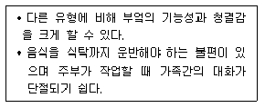
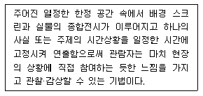
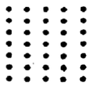
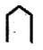
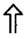
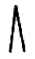
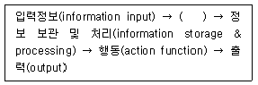
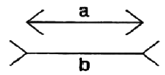
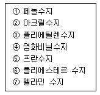
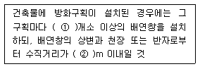

실내건축기사(구) (2010-09-05 기출문제)
1과목: 실내디자인론
1. 기존 실내공간에 대한 개보수(renovation)의 경우 고려해야 할 사항으로 옳은 것은?
- 기존도면이 있을 경우 별도의 실측을 하지 않는다.
- 기존 건축구조의 영향을 전혀 받지 않는다.
- 기존 설비관련 사항에 대한 재검토가 필요없다.
- 실측과 검사를 통해 공간의 실체를 명확하게 파악해야 한다.
(정답률: 86%)

2. 가구배치에 관한 설명 중 옳지 않은 것은?
- 가구의 크기 및 형상은 전체공간의 스케일과 시각적, 심리적 균형을 이루도록 한다.
- 실의 천장고가 높으면 수평적 형상의 가구를, 낮으면 수직적 형상의 가구를 배치한다.
- 문이나 창문이 있는 부분에 위치하는 가구는 이들의 개폐를 위한 여유공간을 고려해야 한다.
- 실의 크기에 비해 가구 종류나 그 수가 너무 많으면 활동면적이 적을 뿐 아니라 답답한 실이 되므로 되도록 사용목적 이외의 가구는 배치하지 않는다.
(정답률: 84%)
3. 다음과 같은 특징을 갖는 부엌의 유형은?

- 독립형 부엌
- 반독립형 부엌
- 다이닝 키친
- 오픈 키친
(정답률: 82%)
4. 실내 디자인 프로세스 중 조건설정단계(프로그래밍단계)에 관한 설명으로 옳지 않은 것은?
- 프로젝트의 전반적인 방향이 정해지는 단계이다.
- 실내디자이너가 설계의뢰인과 협의를 통하여 이해를 확립하는 단계이다.
- 이 단계가 제대로 이루어지지 않으면 프로젝트 진행이 원만하지 못하다.
- 실내디자인 프로세스에서 기본설계단계 이후에 진행되는 단계이다.
(정답률: 75%)
5. 침대의 종류 중 퀸(queen)의 크기로 가장 알맞은 것은?
- 1200mm×2000mm
- 1350mm×2000mm
- 1500mm×2000mm
- 2000mm×2000mm
(정답률: 80%)
6. 형태지각에 대한 설명 중 옳은 것은?
- 유사성이란 제반 시각요소들 중 형태의 경우만 서로 유사한 것들이 연관되어 보이는 경향을 말한다.
- 접근성이란 가까이 있는 시각요소들을 패턴이나 그룹으로 인지하게 되는 특성을 말한다.
- 폐쇄성이란 완전한 시각요소들을 불완전한 것으로 보게되는 성향을 말한다.
- 도형과 배경의 법칙이란 양자가 동시에 도형이 되거나 동시에 배경이 될 수 있는 성향이다.
(정답률: 62%)
7. 질감에 대한 설명으로 옳지 않은 것은?
- 시각을 통해 촉각을 불러일으키는 질감을 시각적 질감이라 한다.
- 질감의 선택에서 중요한 것은 스케일, 빛의 반사와흡수 등이다.
- 효과적인 질감 표현을 위해서는 색채와 조명을 동시에 고려하는 것이 좋다.
- 좁은 실내 공간을 넓게 느껴지도록 하기 위해서는 표면이 울퉁불퉁한 재료를 사용하여 음영을 주도록 한다.
(정답률: 85%)
8. 시스템 가구에 관한 설명으로 옳은 것은?
- 기능보다 디자인 측면에서 단순미가 강조되어야 한다.
- 특정한 사용목적이나 많은 물품을 수납하기 위해 건축화된 가구이다.
- 기능에 따라 여러 가지 형으로 조립 및 해체가 가능하여 공간의 융통성을 꾀할 수 있다.
- 모듈화된 단위 구성재의 결합을 통해 다양한 디자인으로 변형이 가능해야 하기 때문에 대량 생산이 어렵다.
(정답률: 78%)
9. 비대칭 균형에 대한 설명 중 옳지 않은 것은?
- 표준적, 수동적 균형이다.
- 배열의 가능성에 제한을 받지 않는다.
- 대칭균형보다 자연스러운 균형의 형태이다.
- 물리적으로는 불균형이지만 시각상 힘의 정도에 의해 균형을 이루는 것을 말한다.
(정답률: 59%)
10. 동선의 3요소에 속하지 않는 것은?
- 시간
- 하중
- 속도
- 빈도
(정답률: 67%)
11. 호텔의 조명계획에 대한 설명 중 옳지 않은 것은?
- 객실의 욕실조명은 거울 위나 옆쪽에 설치한다.
- 복도는 50~100Lux정도로 균일한 조명을 한다.
- 프론트데스크의 조명은 프론트 직원과 고객의 표정이 서로 확실히 보이도록 밝게 하는 것이 좋다.
- 객실에서 천장의 전체조명은 집적조명방식으로 하고, 탁상스탠드, 플로어스탠드, 벽부등과 같은 국부조명을 사용한다.
(정답률: 81%)
12. 빛의 각도를 이용하는 방법으로 벽면 마감재료의 재질감을 강조하는 조명의 연출 기법은?
- 글레이징(Glazing)기법
- 빔 플레이(Beam Play)기법
- 스파클(Sparkle)기법
- 실루엣(Silhouette)기법
(정답률: 78%)
13. 다음 중 실내디자이너의 역할과 가장 거리가 먼 것은?
- 실내공간에 필요한 그래픽을 제작한다.
- 선물의 내부와 가구의 배치를 계획한다.
- 사용될 공간의 기능적 요구를 충족시킨다.
- 인간의 예술적, 서정적 요구에 대한 문제를 해결한다.
(정답률: 49%)
14. 실내기본요소 중 벽에 관한 설명으로 옳지 않은 것은?
- 높이 1,200mm정도의 벽은 에워싼 느낌을 주나 시각적으로 개방된다.
- 높이 1,500mm정도의 벽은 시각적으로 완전히 차단되고 프라이버시를 높게 한다.
- 높이 600mm이하의 벽은 공간을 상징적으로 분리, 구분한다.
- 벽은 수평요소와 함께 공간을 형성하는 기능을 갖는다.
(정답률: 66%)
15. 실내디자인의 궁극적인 목적으로 가장 알맞은 것은?
- 공간의 품격을 높이는 것이다.
- 공간의 기능적인 면의 해결에 있다.
- 인간생활의 쾌적성을 추구하는 것이다.
- 공간예술로서 모든 분야의 통합에 의한 감성적 요소의 부여에 있다.
(정답률: 85%)
16. 스케일(scale)에 대한 설명 중 옳지 않은 것은?
- 스케일은 상대적인 크기 즉 척도를 의미한다.
- 휴면 스케일이 잘 적용된 건축물은 안정하고 안락한 감을 주는 환경이 된다.
- 실내디자인에서 의도된 디자인의 목적을 달성하기 위해서는 휴먼 스케일만이 의미가 있다.
- 공간에 있어 스케일의 유형은 다양한 공간지각을 가져온다.
(정답률: 88%)
17. 다음의 디자인 요소에 관한 설명 중 옳지 않은 것은?
- 선은 어떤 형상을 규정하거나 한정하고, 면적을 분할한다.
- 점은 선의 교차, 선의 굴절, 면과 선의 교차등에서 나타난다.
- 면은 면 자체의 절단에 의해서 새로운 면을 얻을 수 있다.
- 가구, 기둥이나 계단 등의 건축적 요소, 건축물들은 2차원적 형상이다.
(정답률: 66%)
18. 쇼륨의 공간구성은 상품전시공간, 상담공간, 어트랙션(attraction)공간, 서비스공간, 통로공간, 출입구를 포함한 파사드로 구성되어 진다. 다음 중 어트랙션(attraction)공간에 대한 설명으로 가장 알맞은 것은?
- 진열되는 상품을 디스플레이하기 위한 공간으로 진열대와 진열대구, 연출기구 등이 필요하다.
- 입구에서 관람객의 시선을 집중시켜 쇼륨의 내부로 관람객을 유인하는 역할을 한다.
- 전시상품에 대한 정보를 알리거나 관람자를 안내하기 위한 공간이다.
- 구매상담을 도와주고 관람자를 통제하는 공간이다.
(정답률: 68%)
19. 이질의 각 구성요소들이 전체로서 동일한 이미지를 갖게 하는 것으로, 변화와 함께 모든 조형에 대한미의 근원이 되는 실내디자인의 구성 원리는?
- 대비
- 조화
- 리듬
- 통일
(정답률: 78%)
20. 다음 설명에 알맞은 전시공간의 특수전시 기법은?

- 디오라마 전시
- 아일랜드 전시
- 파노라마 전시
- 하모니카 전시
(정답률: 77%)
2과목: 색채학
21. 색채계획과정을 단계별로 나열한 것 중 가장 합리적인 것은?
- 색채전달계획→색채환경분석→색채심리분석→디자인의 적용
- 색채환경분석→색채심리분석→색채전달계획→디자인에 적용
- 색채전달계획→색채심리분석→색채환경분석→디자인에 적용
- 색채환경분석→색채전달계획→색채심리분석→디자인에 적용
(정답률: 66%)
22. 색의 동화현상이 가장 잘 발생하는 경우는?
- 좁은 시야에 복잡하고 섬세하게 배치되었을 때
- 채도 차이가 클 때
- 명도는 비슷하며 색상이 서로 보색 관계에 있을 때
- 조명이 밝고 무늬가 클 때
(정답률: 57%)
23. 다음 항목의 배색에서 가장 시인성(視認性)이 높은 것은?
- 흰색바탕 위의 파랑글씨
- 검정바탕 위의 흰색글씨
- 검정바탕 위의 노랑글씨
- 노랑바탕 위의 빨강글씨
(정답률: 63%)
24. 스웨덴의 색채 표준으로 채용된 표색계로 헤링의 심리 4원색과 백, 흑 등 6색을 원색으로 하는 표색계는?
- 먼셀 표색계
- 오스트발트 표색계
- NCS 표색계
- PCCS 표색계
(정답률: 57%)
25. 컬러 TV의 브라운관 형광면에는 적(Red), 녹(Green0, 청(Blue)색들이 발광하는 미소한 형광 물체의 의하여 혼색된다. 이러한 혼색방법은?
- 동시감법 혼색
- 계시가법 혼색
- 병치가법 혼색
- 색료감법 혼색
(정답률: 73%)
26. 색상에 의하여 망막이 자극을 받게 되면 시세포의 흥분이 중추에 전해져 자극이 끝난 후에도 계속해서 생기는 시감각 현상은?
- 대비
- 융합
- 조화
- 잔상
(정답률: 78%)
27. 먼셀 색상환에 의한 표색 방법에서 각색상의 중심이 되는 색상 수는?
- 1
- 5
- 10
- 20
(정답률: 75%)
28. 다음 관용색 중 채도가 가장 높은 색은?(KS표준기준)
- 산호색
- 벽돌색
- 옥색
- 올리브색
(정답률: 55%)
29. 혼합되는 각각의 색 에너지(energy)가 합쳐져서 더 밝은 색을 나타내는 혼합은?
- 감산혼합
- 중간혼합
- 가산혼합
- 색료혼합
(정답률: 85%)
30. 청색에 흰색을 혼색시켰을 때의 변화는?
- 청색보다 명도, 채도 모두 높아졌다.
- 청색보다 명도는 높아졌고 채도는 낮아졌다.
- 청색보다 명도는 낮아졌고 채도는 높아졌다.
- 청색보다 명도, 채도 모두 낮아졌다.
(정답률: 75%)
31. 두색이 부조화한 색이라면 서로의 색을 적당하게 섞어 어느 정도 공통의 양상과 성질을 가진 것으로 배색하면 조화한다는 져드의 색채 조화원리는?
- 질서의 원리
- 숙지의 원리
- 유사의 원리
- 비모호성의 원리
(정답률: 73%)
32. 석유나 가스의 저장탱크를 흰색이나 은색으로 칠하는 가장 큰 이유는?
- 반사율이 높은 색이므로
- 흡수율이 높은 색이므로
- 명시성이 높은 색이므로
- 팽창성이 높은 색이므로
(정답률: 77%)
33. 어떤 두 색이 맞붙어 있을 때 두 색의 인접부분에 강한 대비현상이 일어나는 것은?
- 채도대비
- 반전대비
- 보색대비
- 연변대비
(정답률: 62%)
34. 색입체를 수평으로 절단하면 중심축의 회색 주위에 나타나는 모양은?(단, 먼셀 표색계 기준)
- 같은 채도의 여러 색상
- 같은 색상의 채도 변화
- 같은 명도의 여러 색상
- 같은 명도의 같은 색상
(정답률: 62%)
35. 헤링(Hering)의 반대색설에 관한 설명 중 옳은 것은?
- 영ㆍ헬름흘쯔의 3원색설에 대하여 5원색과 보색 광을 가정하고 있다.
- 보색이나 대비의 현상을 설명하는 데는 부합되지 않는다.
- 물리학적인 측면에 중점을 두고 가정한 학설이다.
- 동화(합성)작용의 방향으로 나가면 따뜻한 느낌인 백, 황, 적의 느낌이 생긴다.
(정답률: 30%)
36. 다음 중 동일색상의 배색은?
- 노랑 - 갈색
- 노랑 - 빨강
- 노랑 - 연두
- 노랑 - 검정
(정답률: 56%)
37. 어떤 색채가 매체, 주변색, 광원, 조도(照度)등이 서로 다른 환경 하에서 관찰될 때 다르게 보이는 현상은?
- 색영역 맵핑(color gamut mapping)
- 컬러 어피어런스(color appearance)
- 메타머리즘(matamerism)
- 디바이스 조정(device calibration)
(정답률: 49%)
38. HV/C로 색채를 표시할 때 “C"가 뜻하는 것은?
- 색상
- 명도
- 채도
- 대비
(정답률: 74%)
39. 문과 스펜서의 색채조화에 적용되는 미도의 일반적 논리가 아닌 것은?
- 균형있게 잘 선택된 무채색의 배색 미도가 높다.
- 등색상의 조화는 매우 쾌적한 경향이 있다.
- 등색상 및 등채도의 단순한 배색이 미도가 높다.
- 명도차이가 작을수록 미도가 높다.
(정답률: 59%)
40. 추상체와 간상체 양쪽이 작용하지만 상이 흐릿하여 보기 어렵게 되는 시각상태는?
- 색순응
- 박명시
- 암순응
- 중심시
(정답률: 77%)
3과목: 인간공학
41. 다음 중 실효온도(ET, Effective Temperature)와 가장 관계가 적은 것은?
- 공기의 유동
- 상대습도
- 피부의 발한율
- 주위의 온도
(정답률: 68%)
42. 영상표시단말기(VDT)취급에 관한 설명으로 적절하지 않은 것은?
- 화면상의 문자와 배경과의 휘도비(contrast)를 높인다.
- 눈으로부터 화면까지의 사거리는 40cm이상을 유지한다.
- 작업자의 시선은 수편선상으로부터 아래로 10~15°이내가 되도록 한다.
- 아래팔은 손등과 일직선을 유지하여 손목이 꺾이지 않도록 한다.
(정답률: 80%)
43. 다음 중 광원으로 부터의 직사 휘광(glare)을 처리하는 방법으로 적절하지 않은 것은?
- 광원의 휘도를 줄이고, 수를 늘린다.
- 광원을 시선에서 되도록 가깝게 한다.
- 가리개(shield), 갓(hood)등을 사용한다.
- 휘광원 주위를 밝게 하여 광도비를 줄인다.
(정답률: 78%)
44. 인간의 눈의 구조 중 망막의 충을 구성하는 감광 요소로 색을 구별하는 것은?
- 신경섬유
- 간상세포
- 양극세포
- 원추세포
(정답률: 73%)
45. 다음 도형이 지니는 시지각 현상은?

- 접근성
- 유사성
- 가속성
- 폐쇄성
(정답률: 50%)
46. 다음 중 진동이 인간의 성능에 미치는 일반적인 영향에 관한 설명으로 틀린 것은?
- 진동은 진폭에 비례하여 시력을 손상시킨다.
- 진동은 진폭에 비례하여 추적능력을 손상시키며, 5Hz이하의 낮은 주파수에서 가장 심하다.
- 진동은 안정되고 정확한 근육 조절을 요하는 작업에 부정적 영향을 준다.
- 감시(monitoring), 형태식별(pattern recognition)등 중앙신경처리에 달린 임무는 진동의 영향을 가장 심하게 받는다.
(정답률: 66%)
47. 음의 한 성분이 다른 성분에 대한 감수성을 감소 시키는 현상을 무엇이라 하는가?
- resonance
- masking
- interference
- damping
(정답률: 80%)
48. 다음 중 생체리듬에 관한 설명으로 틀린 것은?
- 육체적 리듬(Phsical rhythm)은 23일의 반복주기로 활동력, 지구력 등과 밀접한 관계가 있다.
- 감성적 리듬(Sensitivity rhythm)은 28일의 반복주기, 신체 조직의 모든 기능을 통하여 발현되는 감정, 즉 정서적 희노애락, 주의력, 예감 및 통찰력 등을 좌우한다.
- 지성적 리듬(Intellectual rhythm)은 33일의 반복주기로 사고력, 기억력, 의지 판단 및 비판력과 밀접한 관계가 있다.
- 위험일(Critical day)은 각각의 리듬이 (-)의 최저점에 이르는 때를 말하며, 한 달에 6일정도 발생한다.
(정답률: 77%)
49. 다음 중 정보의 입력장치에 있어서 청각적 표시장치보다 시각적 표시장치의 사용이 더 유리한 경유는?
- 정보가 간단한 경우
- 정보가 후에 재참조되는 경우
- 정보가 시간적인 사상을 다루는 경우
- 정보가 즉각적인 행동을 요구하는 경우
(정답률: 58%)
50. 다음 중 인체 측정자료의 응용원리에서 최소 집단치를 적용하는 것이 가장 바람직한 경우는?
- 문틀 높이
- 등산용 로프의 강도
- 제어 버튼과 조작자 사이의 거리
- 비행기에서의 비상 탈출구 크기
(정답률: 64%)
51. 인간공학의 연구 및 체계 개발에 있어서의 기준중 인간기준의 유형에 해당하지 않은 것은?
- 인간성능 척도
- 주관적 반응
- 생리학적 지표
- 체계의 성능
(정답률: 59%)
52. 다음 중 신체 부위의 운동 형태와 그 예를 바르게 나열한 것은?
- 조작동작 : 망치질
- 연속동장 : 부품, 공구 다루기
- 반복동작 : 자동차 핸들의 조종
- 계열동작 : 피아노 연주, 타이핑
(정답률: 75%)
53. 문자-숫자의 획폭은 보통 문자나 숫자의 높이에 대한 획 굵기의 비로써 나타내는데 조도가 충분한 장소에서 흰 바탕에 검은 숫자의 인쇄물의 경우 가장 적정한 획폭비는?
- 1:5
- 1:8
- 1:13
- 1:20
(정답률: 56%)
54. 다음 중 계기판의 지침(指針)으로 적절하지 않은 것은?



(정답률: 84%)
55. 다음 중 인체 골격의 주요 기능으로 볼 수 없는 것은?
- 몸을 지탱하여 그 외형을 지지한다.
- 체형을 유지하며 신경신호를 전달한다.
- 골격근의 기동적 수축에 따라 운동을 한다.
- 골격 내부의 골수는 조혈작용을 한다.
(정답률: 63%)
56. 인간공학에 있어 자극들 사이, 반응들 사이, 혹은 자극+반응 조합의 공간, 운동, 혹은 개념적 관계가 인간의 기대와 모순되지 않도록 하는 것을 무엇이라 하는가?
- 양립성(compatibility)
- 접근 용이성(accessibility)
- 조절 가능성(adjustability)
- 순응(adaptation)
(정답률: 76%)
57. 다음과 같이 인간 또는 기계에 의해 수행되는 기본 기능의 과정 중 ( )안에 해당하는 기능은?

- 감지(sensing)
- 피드백(feedback)
- 대응 선택(respunse selection)
- 시스템 환경(system environment)
(정답률: 67%)
58. 두 소리의 강도(强度)를 압력으로 측정한 결과 뒤의 소리가 처음보다 압력이 100배 증가하였다면 이 때 dB수준은 얼마인가?
- 10
- 40
- 80
- 100
(정답률: 49%)
59. [그림]과 같이 a와 b의 길이는 동일하나 b가 a보다 더 길게 보이는 현상을 무엇이라 하는가?

- 헤링(Hering)의 착시(분할착오)
- 포겐도르프(Poggendorf)의 착시(위치착오)
- 뮬러-라이어(Muler-Lyer)의 착시(동화착오)
- 죌러(Zoller)의 착시(방향착오)
(정답률: 67%)
60. 다음 중 조명 수준과 과업 퍼포먼스와의 관계를 올바르게 설명한 것은?
- 조명 수준이 증가함에 따라 과업 퍼포먼스는 감소한다.
- 과업 퍼포먼스는 조명 수준과 관계없이 일정하다.
- 조명 수준이 적정 수준 이상이 되면 과업 퍼포먼스는 더 이상 증가하지 않는다.
- 조명 수준과 과업 퍼포먼스는 선형적 비례 관계를 가진다.
(정답률: 66%)
4과목: 건축재료
61. ALC의 일반적 성질에 대한 설명 중 옳지 않은 것은?
- 기공구조이기 때문에 흡수율이 높은 편이다.
- 열전도율은 보통콘크리트의 약 1/10 정도이다.
- 경량으로 인력에 의한 취급은 가능하지만, 현장에 서 절단 및 가공은 불가능하다.
- 건조수축률이 작고 균열발생이 어렵다.
(정답률: 50%)
62. 규칙적으로 골이 되게 주름잡은 강판으로서 강판의 두께는 0.6~1.2mm정도이며 지붕, 외벽 등에 주로 쓰이고 철근콘크리트 슬래브의 거푸집패널로도 사용되는 것은?
- 메탈라스
- 와이어메시
- 키스톤 플레이트
- 와이어라스
(정답률: 49%)
63. 다음 중 시멘트를 950 ± 50℃로 열을 가했을 때의 질량감소량을 말하는 것은?
- 수경률
- 규산율
- 강열감량
- 활동계수
(정답률: 70%)
64. 석고 플라스터의 일종으로 정벌용과 초벌용이 있으며 정벌용은 물만으로 비비나, 초벌용은 사용시 골재를 가하고 물을 혼합하여 사용하는 것으로 단순히 플라스터라고 말할 경우에 지칭되는 것은?
- 순석고 플라스터
- 경석고 플라스터
- 혼합석고 플라스터
- 보드용 플라스터
(정답률: 32%)
65. 석유게 아스팔트로 점착성, 방수성은 우수하지만 연화점이 비교적 낮고 내후성 및 온도에 의한 변화정도가 커 지하실 방수공사이외에 사용하지 않는 것은?
- 로크 아스팔트(Lock asphalt)
- 블로운 아스팔트(Blown asphalt)
- 아스팔트 컴파운드(Asphalt compound)
- 스트레이트 아스팔트(Straight asphalt)
(정답률: 53%)
66. 다음 보기의 합성수지 중 열가소성 수지에 해당하는 것은?

- ①-②-⑤-⑦
- ①-③-⑥
- ②-③-④
- ②-④-⑥
(정답률: 56%)
67. 목재 및 기타 식물의 섬유질소편에 합성수지접착제를 도포하여 가열압착성형한 판상제품은?
- 합판
- 시멘트목질판
- 집성목재
- 파티클보드
(정답률: 58%)
68. 콘크리트용 혼화제 중 AE감수제의 사용으로 나타나는 효과 중 옳지 않은 것은?
- 굳지 않은 콘크리트의 워커빌리티를 개선하고 재료 분리가 방지된다.
- 동결융해에 대한 저항성이 증대된다.
- 건조수축이 감소된다.
- 수밀성이 향상되고 투수성이 증가한다.
(정답률: 56%)
69. 다음 무기안료의 종류와 색상이 잘못 연결된 것은?
- 흑색 : 아연황, 카본블랙
- 적색 : 연단, 산화철
- 황색 : 황토, 산화철황
- 청색 : 코발트청, 군청
(정답률: 52%)
70. 다음 각 목재 방부제의 특징을 잘못 설명한 것은?
- 크레오소트유 : 도장이 불가능하며, 독성이 적고 자극적인 냄새가 난다.
- CCA : 도장이 가능하고 독성이 없으며 처리재는 무색이다.
- PCP : 도장이 가능하며 처리재는 무색으로 성능이 우수한 유용성 방부제이다.
- PF : 도장 가능하고 독성이 있으며 처리재는 황록색이다.
(정답률: 34%)
71. 다음 중 도장공사 후 건조된 도막형성재에 해당되지 않는 것은?
- 보일유
- 테레빈유
- 수지
- 안료
(정답률: 48%)
72. 내구성 및 강도가 크고 외관이 수려하나 함유광물의 열팽창계수가 달라 내화성이 약한 석재로 외장, 내장, 구조재, 도로포장재, 콘크리트 골재 등에 사용되는 것은?
- 응회암
- 화강암
- 화산암
- 대리석
(정답률: 43%)
73. 도료상태의 방수재를 바탕면에 여러번 칠하여 상당한 살두께의 방수막을 만드는 방수법은?
- 도막방수
- 아스팔트방수
- 시멘트방수
- 시트방수
(정답률: 64%)
74. 다음 미장재료 중 여물(hair)이 필요없는 것은?
- 돌로마이트 플라스터
- 회반죽
- 회사벽
- 경석고 플라스터
(정답률: 50%)
75. 목재의 심재와 변재에 관한 설명으로 옳지 않은 것은?
- 변재는 심재 외측과 수피 내측 사이에 있는 생활세포의 집합이다.
- 심재는 수액의 통로이며 양분의 저장소이다.
- 심재는 변재보다 단단하여 강도가 크고 신축 등 변형이 적다.
- 심재의 색깔은 짙으며 변재의 색깔은 비교적 엷다.
(정답률: 67%)
76. 아스팔트 침입도 시험에 있어서 아스팔트의 온도는 몇 ℃를 기준으로 하는가?(오류 신고가 접수된 문제입니다. 반드시 정답과 해설을 확인하시기 바랍니다.)
- 15℃
- 25℃
- 35℃
- 45℃
(정답률: 13%)
77. 경질이며 흡습성이 적은 특성이 있으며 도로나 마룻바닥에 까는 두꺼운 벽돌로서 원료로 연와토 등을 쓰고 식염유로 사유소성한 벽돌은?
- 검정벽돌
- 광재벽돌
- 날벽돌
- 포도벽돌
(정답률: 59%)
78. 일종의 못박기총을 사용하여 콘크리트나 강재 등에 쳐박는 특수못을 의미하는 것은?
- 드라이브핀
- 인서트
- 익스팬션볼트
- 듀벨
(정답률: 69%)
79. 점토기와 중 훈소와에 해당하는 설명은?
- 소소와에 유약을 발라 재소성한 기와
- 기와 소성이 끝날 무렵에 식염증기를 충만시켜 유약 피막을 형성시킨 기와
- 저급점토를 원료로 900~1000℃로 소소하여 만든것으로 흡수율이 큰 기와
- 건조제품을 가마에 넣고 연료로 장작이나 솔잎 등을 써서 검은 연기로 그을려 만든 기와
(정답률: 80%)
80. 다음 중 한중콘크리트에 대한 설명으로 옳지 않은 것은?
- 한중콘크리트에는 공기연행 콘크리트를 사용하는 것을 원칙으로 한다.
- 단위수량은 초기동해를 적게 하기 위하여 소요의 워커빌리티를 유지할 수 있는 범위 내에서 되도록 적게 정하여야 한다.
- 물-결합재비는 원칙적으로 50%이하로 하여야 한다.
- 배합강도 및 물-결합재비는 적산온도 방식에 의해 결정할 수 있다.
(정답률: 52%)
5과목: 건축일반
81. 목구조에서 가새보다 수평력에 더 강하게 저항할수는 없지만 건축물의 형상이나 기능상으로 가새를 댈수 없는 곳에 사용하는 것은?
- 토대
- 버팀대
- 귀잡이
- 꿸대
(정답률: 47%)
82. 방화관리 대상물 중 방화관리자를 두어야 하는 곳은?
- 가연성가스를 300t이상 저장, 취급하는 곳
- 연면적이 5,000m2 이상인 곳(공동주택 제외)
- 지하층을 제외한 층수가 16층 이상인 공동주택
- 1개층의 바닥면적이 3,000m2 이상인 곳(공동주택 제외)
(정답률: 12%)
83. 하이테크(High-Tech)건축의 디자인관이 아닌 것은?
- 기계 문명의 효율적 가치
- 특수 구조의 활용
- 기계 이미지의 추구
- 부품화 및 대량 생산
(정답률: 28%)
84. 바닥면적이 300m2 이상인 공연장의 개별관람석의 출구의 설치기준으로 옳지 않은 것은?
- 출구는 관람석별 2개소 이상 설치해야 한다.
- 관람석으로부터 바깥쪽으로 출구로 쓰이는 문은 안여닫이로 하여야 한다.
- 각 출구의 유효너비는 1.5미터 이상으로 하여야 한다.
- 개별관람석 출구의 유효너비의 합계는 개별관람석의 바닥면적 100m2마다 0.6m의 비율로 산정한 너비이상으로 한다.
(정답률: 74%)
85. 지하3층 지상12층 규모의 전신전화국으로 각층 공히 바닥면적 2,000m2이고 각층 거실 면적은 각층 바닥면적의 80%일 경우 최소로 필요한 승용승강기의 대수를 구하시오. (단, 승용승강기는 15인승 기준임, 각층의 층고는 4m임)
- 3대
- 4대
- 5대
- 6대
(정답률: 54%)
86. 다음 중 근대 건축가인 루이스 칸(Louis I. Kahn)의 작품은?
- 롱샹(Ronchams)교회당
- 시그램(Seagram)빌딩
- 리차드 의학연구소(Richards Medical Research Laboratories)
- 웨인 라이트 빌딩(The Wain Wright Building)
(정답률: 58%)
87. 다음 중 건축물부의의 열관류율 기준이 가장 낮은 것은? (단, 중부지역이며 외기에 직접 면하는 경우)
- 거실의 외벽
- 최하층에 있는 거실의 바닥
- 최상층에 있는 거실의 반자 또는 지붕
- 공동주택의 측벽
(정답률: 47%)
88. 한옥에서의 창에 대한 설명 중 옳지 않은 것은?
- 화창 : 부엌의 부뚜막 측면의 윗벽을 뚫어 만든 일종의 배기구멍 역할을 하는 창
- 광창 : 실내에 빛이 들어오게 하기 위해 방의 벽위쪽이나 출입문 위쪽에 설치하는 창
- 교창 : 부엌의 벽이나 곳간 벽에 높이 설치하여 통풍이나 환기 역할을 하는 창
- 눈꼽재기창 : 방한을 위해 실내에 이중으로 만든창으로 덧문이나 벽장문에 쓰이는 창
(정답률: 59%)
89. 다음 중 에너지 절약 계획서 제출 건축물에 해당 하는 것은?
- 바닥면적 합계가 2,000m2인 기숙사
- 제1종 근린생활시설 중 바닥면적의 합계가 300m2인 목욕장
- 바닥면적의 합계가 8,000m2인 종교시설
- 바닥면적의 합계가 6,000m2인 장례식장
(정답률: 36%)
90. 담, 박공벽, 난간 등의 상부에 덮어 씌우는 돌로서 그 윗면에는 물흘림, 밑면에는 물끊기를 두는 것은?
- 돌림띠
- 쌤돌
- 창대돌
- 두겁돌
(정답률: 52%)
91. 고대 이집트 피라미드 건축에 대한 설명으로 옳지 않은 것은?
- 피라미드 건축은 고왕국 시기 때 가장 번성하였다.
- 사카라에 위치한 피라미드는 계단식 형태로 축조되었다.
- 피라미드는 파일런(Pylon)에서 발전하였다.
- 피라미드는 장례용 복합단지로서 피라미드 본체가 완성되면 피라미드 주변에 성곽을 두르고 부속건물을 건설하였다.
(정답률: 50%)
92. 다음 방염성능기준 이상의 실내장식물 등을 설치하여야 하는 특정소방대상물이 아닌 것은?
- 종합병원
- 숙박시설
- 옥내수영장
- 방송국
(정답률: 87%)
93. 다음 중 오피스텔의 난방설비를 개별난방방식으로 설치시 난방구획마다 내화구조로 구획하여야 하는 부위는?
- 벽, 바닥과 갑종방화문으로 된 출입문
- 벽, 천장과 갑종방화문으로 된 출입문
- 벽, 바닥과 을종방화문으로 된 출입문
- 벽, 천장과 을종방화문으로 된 출입문
(정답률: 58%)
94. 다음 중 비상용승강기를 설치하지 아니할 수 있는 건축물 기준에 해당하는 것은?
- 높이 31m를 넘는 각층을 거실외의 용도로 쓰는 건축물
- 높이 31m를 넘는 각층의 바닥면적의 합계가 800m2이하인 건축물
- 높이 31m 이하인 층수가 4개층 이하인 건축물
- 높이 31m를 넘는 층수가 4개층 이하로서 당해 각
(정답률: 51%)
95. 다음은 6층 이상의 종교시설에 적용되는 배연설비 설치 기준이다. ( )안에 알맞은 내용은?

- ① 1, ② 0.5
- ① 1, ② 0.9
- ① 2, ② 0.5
- ① 2, ② 0.9
(정답률: 43%)
96. 철골조 용접의 결함에 대한 설명 중 옳은 것은?
- 언더컷(under cut) : 용접봉의 통과로 발생한 용작 금속층
- 오버랩(over lap) : 용착금속이 모재와 융합되지 않고 덮여진 부분
- 블로우 홀(blow hole) : 용접부분 표면에 생기는 작은 구명
- 위핑 홀(weeping hole) : 금속이 녹아들 때 생기는 기포나 작은 틈
(정답률: 20%)
97. 보강 블록조에서 내력벽 길이의 총합계가 45m이고, 그 층의 건물면적이 300m2일 경우 내력벽의 벽량은?
- 10㎝/m2
- 15㎝/m2
- 30㎝/m2
- 45㎝/m2
(정답률: 50%)
98. 다음 중 PC(Precast Concrete)공법의 장·단점에 대한 설명으로 옳지 않은 것은?
- 초기시설투자비가 적게 든다.
- 기후변화에 영향을 적게 받는다.
- 설계상의 제약이 따른다.
- 기계화, 자동화에 의해 품질이 향상된다.
(정답률: 72%)
99. 콘크리트 블록쌓기에 대한 설명으로 옳지 않은 것은?
- 블록은 살(shell)두께가 큰 면을 아래로 하여 쌓는다.
- 줄눈은 일반적으로 막힌줄눈으로 하여 철근으로 보강할 때 등 특별한 경우 통줄눈으로 한다.
- 모르타르 접촉면은 적당히 물축이기를 한다.
- 규준틀에는 수평선을 치고 모서리, 중간요소에 먼저 기준이 되는 블록을 수평실에 맞추어 다림추 등을 써서 정확하게 설치한 다음 중간블록을 쌓는다.
(정답률: 62%)
100. 한국의 전통건축에서 주두의 일반적인 기능과 거리가 먼 것은?
- 구조의 불안정을 교정
- 조형미의 교정
- 시각적인 불안을 요정
- 권위성의 교정
(정답률: 65%)
6과목: 건축환경
101. 자연환기에 관한 설명 중 옳은 것은?
- 자연환기는 외부풍압의 작용에 의해서만 이루어진다.
- 환기량은 개구부의 면적에 반비례한다.
- 환기량은 실내외의 온도차가 클수록 많아진다.
- 연돌효과는 자연환기와는 무관하다.
(정답률: 72%)
102. 주광률을 가장 올바르게 설명한 것은?
- 실내의 조도가 옥외의 조도 몇 %에 해당하는가를 나타내는 값
- 시야 내에 휘도의 고르지 못한 정도를 나타내는 값
- 빛을 발산하는 면을 어느 방향에서 보았을 때 그밝기를 나타내는 전도
- 복사로서 전파하는 에너지의 시간적 비율
(정답률: 70%)
103. 직접조명과 간접조명에 대한 비교 설명 중 옳지 않은 것은?
- 간접조면보다 직접조명의 조명효율이 더 높다.
- 동일 조도를 얻기 위한 시설비는 직접조명이 더 많이 든다.
- 간접조명은 그림자가 거의 형성되지 않고, 부드러운 빛으로 안정된 조명을 할 수 있다.
- 직접조명은 국부적으로 고조도를 얻기 편리하다.
(정답률: 54%)
104. 구조체를 통한 열손실량을 줄이기 위한 방안으로 옳지 않은 것은?
- 외표면적을 줄인다.
- 단열재의 두께를 증가시킨다.
- 구조체의 열관류율을 적게 한다.
- 중공층 약측 표면에 복사율이 큰 재료를 사용한다.
(정답률: 38%)
1⑤. 화장실, 주방, 욕실 등에 가장 적합한 환기 방식은?
- 자연환기
- 급기팬과 배기패의 조합
- 자연급기와 배기팬의 조합
- 급기팬과 자연배기의 조합
(정답률: 66%)
106. 음압이 2x10-3N/m2인 음의 음압 레벨은?
- 30db
- 40db
- 50db
- 60db
(정답률: 39%)
107. 급탕배관의 설계 및 시공상 주의사항으로 옳지 않은 것은?
- 중앙식 급탕설비는 원칙적으로 중력식 순환방식으로 한다.
- 관의 신축을 고려하여 건물의 벽관통부분의 배관에 는 슬리브를 끼운다.
- 관의 신축을 고려하여 배관의 굽힘 부분에는 스위블 이음으로 접합한다.
- 급탕밸브나 플랜지 등의 패킹은 내열성 재료를 선택하여 시공한다.
(정답률: 27%)
108. 균일한 1[cd]의 점광원으로부터 방사되는 전 광속은?
- 1π[1m]
- 2π[1m]
- 3π[1m]
- 4π[1m]
(정답률: 48%)
109. 실내에 이어서 인체 표면과 벽 ∙천장 ∙바닥면등 주벽면과의 열복사가 재실자의 쾌적감에 미치는 영향을 측정하기 위하여 Vernon에 의해 고안된 온도계는?
- 아스만 온도계
- 글로브 온도계
- 자기 온도계
- 카타 온도계
(정답률: 56%)
110. 흡읍재료 중 연속기포 다공질재에 대한 설명으로 옳지 않은 것은?
- 배후공기층은 중저음역의 흡음성능에 유효하다.
- 재료로는 유리면, 암면, 펠트, 연질 섬유판 등이 있다.
- 일반적으로 두께를 늘리면 흡음률을 작아진다.
- 표면마감처리방법에 의해 흡음 특성이 변한다.
(정답률: 75%)
111. 0.5L의 물을 5℃에서 60℃로 올리는데 필요한 열량은? (단, 물의 비열은 4.2kJ/kg∙, 물의 밀도는 1kg/L)
- 63.0kJ
- 115.5kJ
- 127.5kJ
- 180.0kJ
(정답률: 61%)
112. 벽체의 내부결로에 관한 설명 중 옳지 않은 것은?
- 단열적 벽체일수록 발생하기 쉽다.
- 벽체 내부로 수증기의 침입을 억제하면 내부결로 방지에 효과가 있다.
- 내부결로를 방지하기 위해 단열공법은 내측단열공법으로 시공한다.
- 내부결로를 방지하기 위해 방습층은 온도가 높은 단열재의 실내측에 위치하도록 한다.
(정답률: 52%)
113. 열의 이동(전열)에 관한 설명 중 옳지 않은 것은?
- 열은 온도가 높은 곳에서 낮은 곳으로 이동한다.
- 유체와 고체 사이의 열의 이동을 열전도라고 한다.
- 일반적으로 액체는 고체보다 열전도율이 작다.
- 열전도율은 물체의 고유성질로서 전도에 의한 열이 이동정도를 표시한다.
(정답률: 57%)
114. 음에 관한 설명 중 옳지 않은 것은?
- 음의 공기 중 전파속도는 기온이 높을수록 빨라진다.
- 음의 고저는 음파의 기본음이 가지는 기본 주파수에 의해서 결정된다.
- 음파는 횡파이며, 음의 크기는 음파를 구성하는 고조파의 크기에 의해 결정된다.
- 회절은 낮은 주파수의 음일수록 현저하게 나타나지만 주파수가 높아질수록 회절을 일으키기 어렵게 된다.
(정답률: 38%)
115. 공기 중의 음속이 344ms, 주파수가 450Hz일 대음의 파장(m)은?
- 0.33
- 0.76
- 1.31
- 6.25
(정답률: 47%)
116. 다음의 펌프 중 터보형 펌프에 속하지 않는 것은?
- 볼류트 펌프
- 터빈 펌프
- 사류 펌프
- 피스톤 펌프
(정답률: 54%)
117. 실내조명설계 과정에서 가장 먼저 고려해야 할사항은?
- 조명방식의 선정
- 소요조도의 결정
- 전등종류의 선정
- 조명기구의 배치계획
(정답률: 75%)
118. 호텔의 주방이나 레스토랑의 주방에서 배출되는 배수중의 유지분을 포집하기 위하여 사용되는 포집기는?
- 플라스터 포집기
- 헤어 포집기
- 오일 포집기
- 그리스 포집기
(정답률: 54%)
119. 콘서트홀의 음향설계에 대한 설명 중 옳지 않은 것은?
- 홀 전체의 음 확산이 잘되고 잔향이 없어야 한다.
- 모든 관객석에서 충분한 직접음∙초기반사음을 확보한다.
- 기본설계 단계에서 실의 크기나 치수비 등의 결정시에 음향적으로도 충분한 검토가 필요하다.
- 에코나 플러터 에코와 같은 음향 장애가 발생하지않도록 한다.
(정답률: 66%)
120. 수증기의 제거를 목적으로 환기를 하려고 한다. 수증기 발생량이 12kg/h이고 환기의 절대습도가 0.008[kg/kg] 일때 실내 절대습도를 0.01[kg/kg]으로 유지하기 위한 환기량은? (단, 공기의 밀도는 1.2kg/m3이다.)
- 4,800[m3/h]
- 5,000[m3/h]
- 5,200[m3/h]
- 5,400[m3/h]
(정답률: 31%)